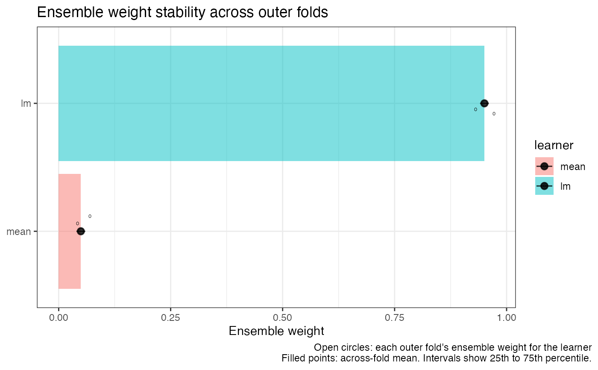

Predicting from a Cross-Fitted Super Learner
Source:R/crossfit_super_learner.R
crossfit_sl_methods.RdA cross-fitted super learner deliberately has no single prediction
function: it is one fitted super learner per outer fold, retained
so that each observation can be predicted by an ensemble trained without
it. This method therefore errors with directions to the fold-aware
interfaces: $oof_predictions for out-of-fold predictions,
$predict_modified(modify) for interventional/modified-data
predictions, and $predict_fold(newdata_list) for arbitrary
per-fold newdata. To fit one predictor on all the data, use
super_learner().
Following the convention that a super learner's "coefficients" are its
meta-learned ensemble weights (see coef.nadir_sl_model),
the coefficients of a cross-fitted super learner are the ensemble
weights of each outer fold's fit, returned as a folds-by-learners matrix.
Entries are NA for learners dropped (due to fitting errors) in a
given fold. Column-wise variability across rows is a useful diagnostic
of how stable the ensemble is across folds; see
summary.nadir_crossfit_sl and
plot(x, type = "weights").
Equivalent to object$oof_predictions: each value is the
prediction for that observation from the outer fold whose training data
excluded it. Values are in the original row order of the
(complete-case-filtered) data; object$complete_rows maps positions
back to the data as supplied. Rows never held out by the
cv_schema are NA.
Observed outcomes minus out-of-fold predictions, in the original row
order of the (complete-case-filtered) data. NA for rows never
held out by the cv_schema. Errors for density and multiclass
outcomes, where out-of-fold predictions are densities/probabilities of
the observed outcome rather than point predictions.
All outer folds share one specification by construction, so this
delegates to the first fold's fit: a single formula when all
learners share one, otherwise a named list of per-learner formulas.
The number of rows of the (complete-case-filtered) data over which
cross-fitting was performed — i.e., the length of
$oof_predictions and $fold_assignments.
Reports (i) the held-out loss of each outer fold alongside the overall
cross-fitted loss, and (ii) a weight-stability table: the mean, standard
deviation, and range of each learner's ensemble weight across the outer
folds. Large across-fold variability in a learner's weight — or
n_folds_present below n_folds, indicating the learner
errored in some folds — is a signal that the ensemble is not stable
under resampling.
Two plot types are provided:
type = "weights" (default)Ensemble-weight stability: each learner's weight in each outer fold (open circles) with the across-fold mean (filled points). Tight clusters indicate an ensemble that is stable under resampling; missing circles indicate folds where a learner errored and was dropped.
type = "fitted"Out-of-fold predictions against observed outcomes, colored by outer fold, with the identity line for reference. Every prediction comes from an ensemble trained entirely without that observation. Rows never held out by the
cv_schemaare omitted. Not defined foroutcome_type = "density"or"multiclass".
Requires the ggplot2 package (listed in Suggests).
Usage
# S3 method for class 'nadir_crossfit_sl'
predict(object, ...)
# S3 method for class 'nadir_crossfit_sl'
coef(object, ...)
# S3 method for class 'nadir_crossfit_sl'
fitted(object, ...)
# S3 method for class 'nadir_crossfit_sl'
residuals(object, ...)
# S3 method for class 'nadir_crossfit_sl'
formula(x, ...)
# S3 method for class 'nadir_crossfit_sl'
nobs(object, ...)
# S3 method for class 'nadir_crossfit_sl'
summary(object, ...)
# S3 method for class 'summary.nadir_crossfit_sl'
print(x, digits = 4, ...)
# S3 method for class 'nadir_crossfit_sl'
plot(x, type = c("weights", "fitted"), ...)Arguments
- object
A
nadir_crossfit_sl.- ...
Ignored; included for compatibility with the generic.
- x
A
nadir_crossfit_slas returned bycrossfit_super_learner().- digits
the number of digits to print in the summary
- type
One of
"fitted"or"weights".
Value
Does not return; always signals an informative error.
A numeric matrix (rows: outer folds; columns: learners); each
row sums to 1 over its non-NA entries.
A numeric vector of length nobs(object).
A numeric vector of length nobs(object).
A formula or a named list of formulas.
An integer.
An object of class summary.nadir_crossfit_sl: a list with
$fold_losses (data.frame: fold, n_validation, loss),
$weight_stability (data.frame: learner, mean_weight, sd_weight,
min_weight, max_weight, n_folds_present, ordered by mean weight),
and the scalars $cv_loss, $y_variable,
$outcome_type, $n_folds, $inner_n_folds,
$n_obs, $n_never_held_out.
A ggplot object.
Examples
if (requireNamespace("ggplot2", quietly = TRUE)) {
cf <- crossfit_super_learner(
data = mtcars,
formula = mpg ~ cyl + hp,
n_folds = 2, inner_n_folds = 2,
learners = list(mean = lnr_mean, lm = lnr_lm)
)
plot(cf) # out-of-fold predictions vs. observed
plot(cf, type = "weights") # weight stability across folds
}
